F5 Identity and Access Management Solutions > Class 1: SAML Federation with F5 Source | Edit on
Lab 3: Kerberos to SAML Lab¶
The purpose of this lab is to deploy and test a Kerberos to SAML configuration. Students will modify a previous built Access Policy and create a seamless access experience from Kerberos to SAML for connecting users. This lab will leverage the work performed previously in Lab 2. Archive files are available for the completed Lab 2.
Objective:
- Gain an understanding of the Kerberos to SAML relationship its component parts.
- Develop an awareness of the different deployment models that Kerberos to SAML authentication opens up
Lab Requirements:
- All Lab requirements will be noted in the tasks that follow
Estimated completion time: 25 minutes
TASK 1 – Modify the SAML Identity Provider (IdP) Access Policy¶
Using the existing Access Policy from Lab 2, navigate to Access ‑> Profiles/Policies ‑> Access Profiles (Per-Session Policies), and click the Edit link next to the previously created idp.f5demo.com-policy
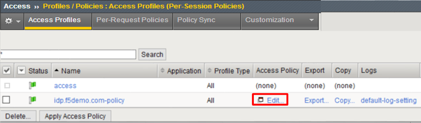
Delete the Logon Page object by clicking on the X as shown
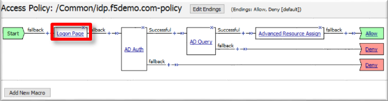
In the resulting Item Deletion Confirmation dialog, ensure that the previous node is connect to the fallback branch, and click the Delete button
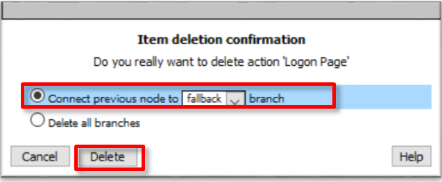
In the Visual Policy Editor window for
/Common/idp.f5demo.com‑policy, click the Plus (+) Sign between Start and AD Auth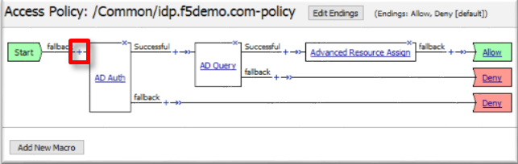
In the pop-up dialog box, select the Logon tab and then select the Radio next to HTTP 401 Response, and click the Add Item button
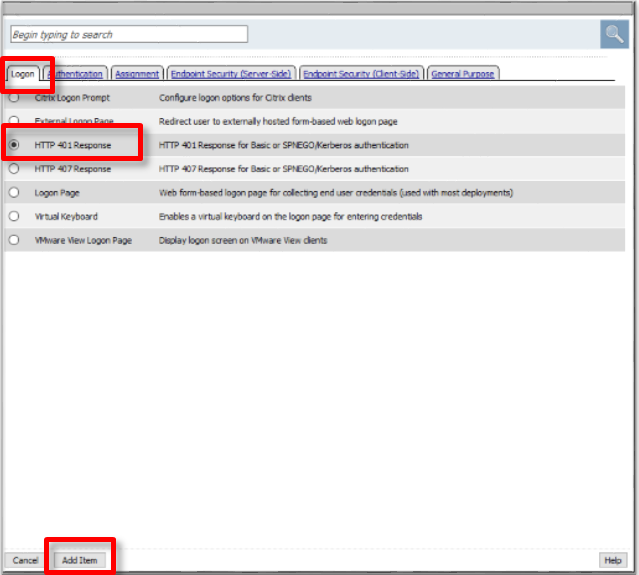
In the HTTP 401 Response dialog box, enter the following information:
Basic Auth Realm: f5demo.comHTTP Auth Level: basic+negotiate(drop down)Click the Save button at the bottom of the dialog box
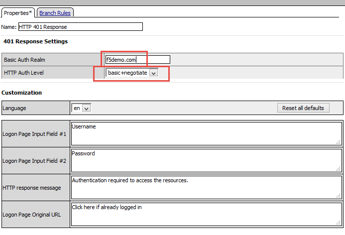
In the Visual Policy Editor window for
/Common/idp.f5demo.com‑policy, click the Plus (+) Sign on the Negotiate branch between HTTP 401 Response and DenyIn the pop-up dialog box, select the Authentication tab and then select the Radio next to Kerberos Auth, and click the Add Item button
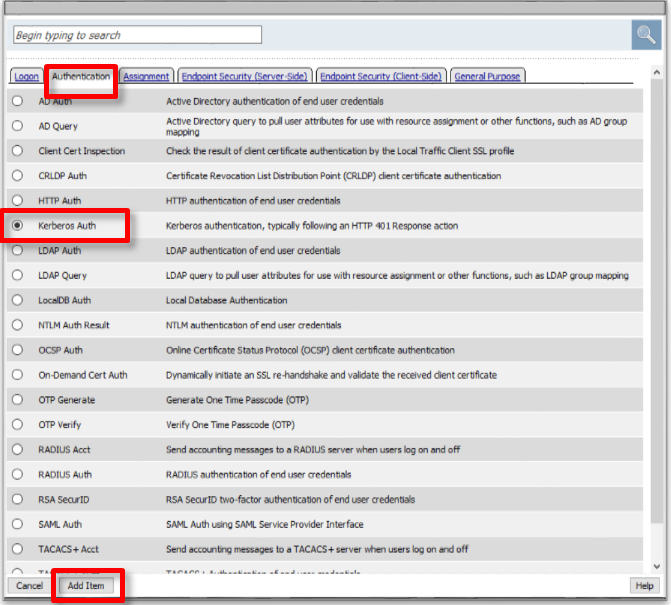
In the Kerberos Auth dialog box, enter the following information:
AAA Server: /Common/apm-krb-aaa(drop down)Request Based Auth: Disabled(drop down)Click the Save button at the bottom of the dialog box
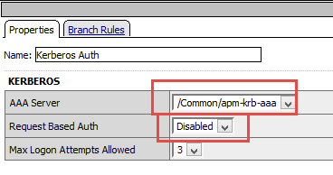
Note
The apm-krb-aaa object was pre-created for you in this lab. More details on the configuration of Kerberos AAA are included in the Learn More section at the end of this guide.
In the Visual Policy Editor window for
/Common/idp.f5demo.com‑policy, click the Plus (+) Sign on the Successful branch between Kerberos Auth and Deny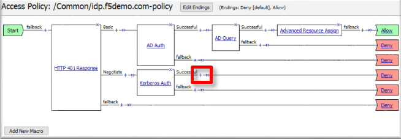
In the pop-up dialog box, select the Authentication tab and then select the Radio next to AD Query, and click the Add Item button
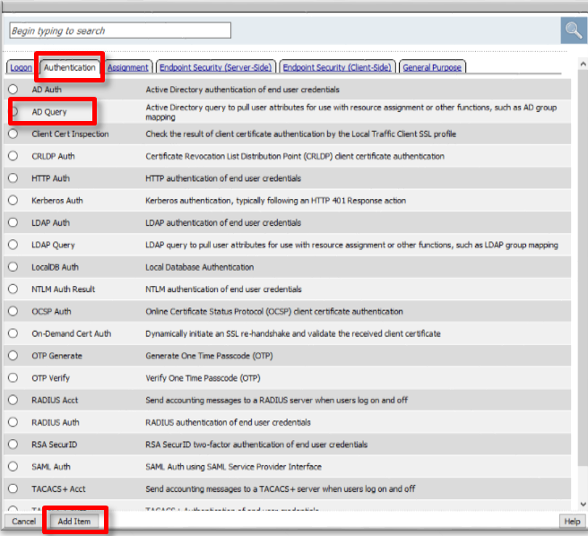
In the resulting AD Query(1) pop-up window, select
/Commmon/f5demo_adfrom the Server drop down menuIn the SearchFilter field, enter the following value:
userPrincipalName=%{session.logon.last.username}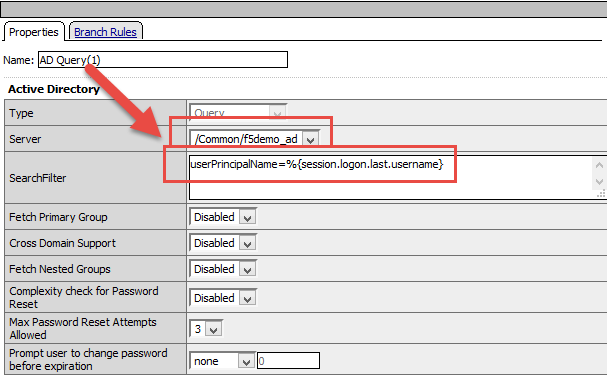
In the AD Query(1) window, click the Branch Rules tab
Change the Name of the branch to Successful.
Click the Change link next to the Expression

In the resulting pop-up window, delete the existing expression by clicking the X as shown
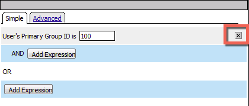
Create a new Simple expression by clicking the Add Expression button
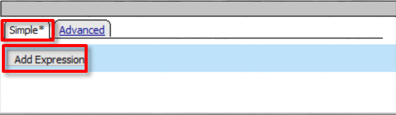
In the resulting menu, select the following from the drop down menus:
Agent Sel: AD QueryCondition: AD Query PassedClick the Add Expression Button
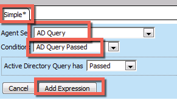
Click the Finished button to complete the expression
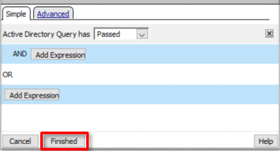
Click the Save button to complete the AD Query
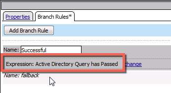
In the Visual Policy Editor window for
/Common/idp.f5demo.com‑policy, click the Plus (+) Sign on the Successful branch between AD Query(1) and DenyIn the pop-up dialog box, select the Assignment tab and then select the Radio next to Advanced Resource Assign, and click the Add Item button
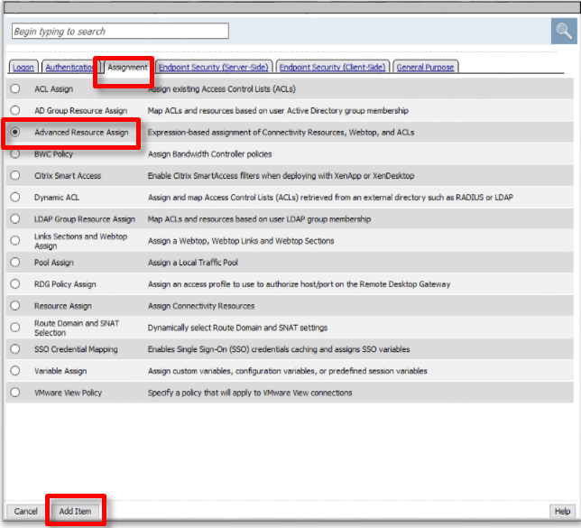
In the resulting Advanced Resource Assign(1) pop-up window, click the Add New Entry button
In the new Resource Assignment entry, click the Add/Delete link
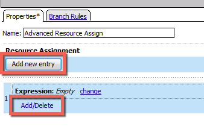
In the resulting pop-up window, click the SAML tab, and select the Checkbox next to /Common/partner-app
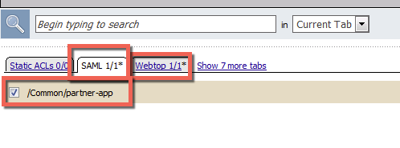
Click the Webtop tab, and select the Checkbox next to
/Common/full_webtop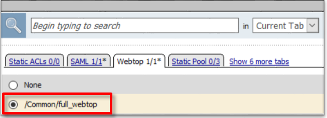
Click the Update button at the bottom of the window to complete the Resource Assignment entry
Click the Save button at the bottom of the Advanced Resource Assign(1) window
In the Visual Policy Editor, select the Deny ending on the fallback branch following Advanced Resource Assign
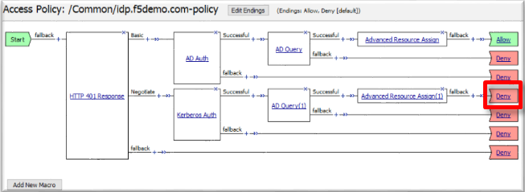
In the Select Ending dialog box, selet the Allow radio button and then click Save
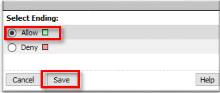
In the Visual Policy Editor, click Apply Access Policy (top left), and close the Visual Policy Editor
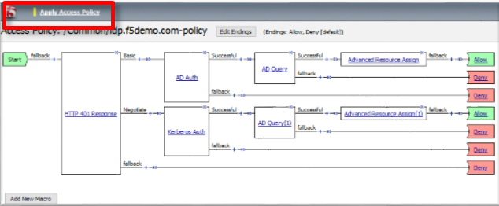
TASK 2 - Test the Kerberos to SAML Configuration¶
Note
In the following Lab Task it is recommended that you use Microsoft Internet Explorer. While other browsers also support Kerberos (if configured), for the purposes of this Lab Microsoft Internet Explorer has been configured and will be used.
Using Internet Explorer from the jump host, navigate to the SAML IdP you previously configured at https://idp.f5demo.com (or click the provided bookmark)
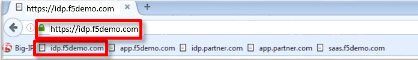
Were you prompted for credentials? Were you successfully authenticated? Did you see the webtop with the SP application?
Click on the Partner App icon. Were you successfully authenticated (via SAML) to the SP?
Review your Active Sessions (Access ‑> Overview ‑> Active Sessions)
Review your Access Report Logs (Access ‑> Overview ‑> Access Reports)